Colazione al banco
Cornetti, brioche e paste da colazione con caffè e cappuccino, dalle sette del mattino.
Selargius e Quartucciu
Pasticceria e caffetteria, dal mattino presto.
Paste mignon, torte su ordinazione, crostate di frutta, lievitati e salato: tutto preparato nel nostro laboratorio e portato in vetrina ogni giorno. Due negozi a pochi minuti l'uno dall'altro, alle porte di Cagliari.
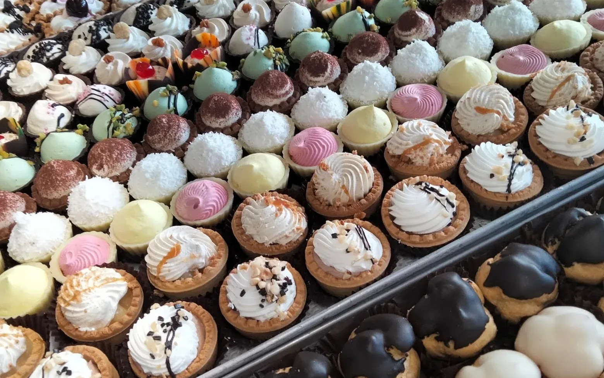
Cake & Bake è una pasticceria con caffetteria: si entra la mattina presto per un cornetto e un cappuccino, si torna nel pomeriggio per un vassoio di paste, e si passa a ritirare la torta il giorno della festa.
Paste mignon, bignè, tartellette, crostate di frutta, biscotti decorati a mano e lievitati delle feste escono dallo stesso laboratorio. È il motivo per cui la vetrina cambia con le stagioni e con le ricorrenze, invece di restare sempre uguale.
Tante leccornie, ambiente accogliente e amichevole.
da una recensione dei clienti
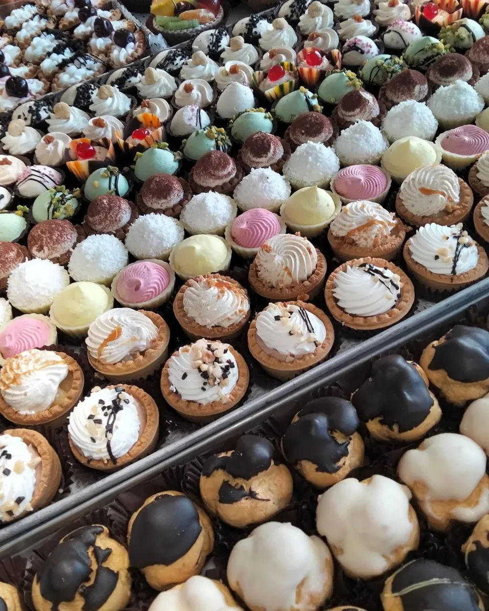
Dolce e salato, dalla colazione al vassoio per la domenica.
Cornetti, brioche e paste da colazione con caffè e cappuccino, dalle sette del mattino.
Bignè, tartellette, mini torte al cocco, al pistacchio e al tiramisù. Si compongono a vassoio.
Compleanni, battesimi, anniversari. Decorate a mano, con la scritta che vuoi tu.
Frutta fresca tagliata al momento su crema pasticciera e pasta frolla.
Pizzette, panini e tramezzini preparati in casa, per la pausa o per il buffet.
Colombe e panettoni del laboratorio, biscotti decorati e confezioni regalo per le feste.
Ci dici l'occasione, quante persone siete e cosa vi piace. Al resto pensiamo noi: farcitura, decorazione e la scritta sopra.
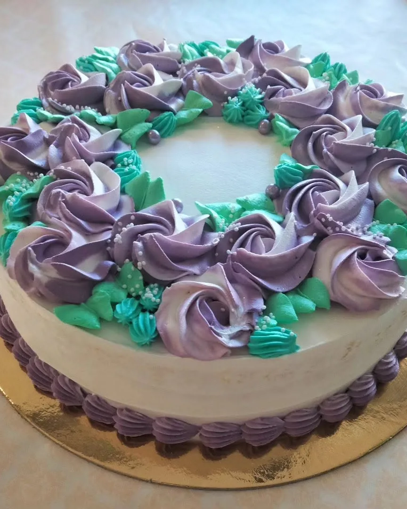
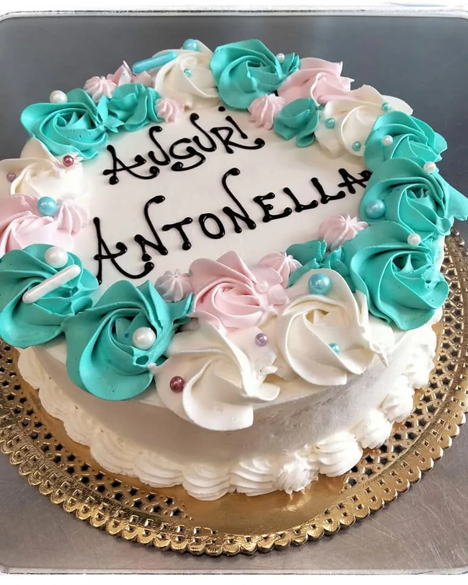
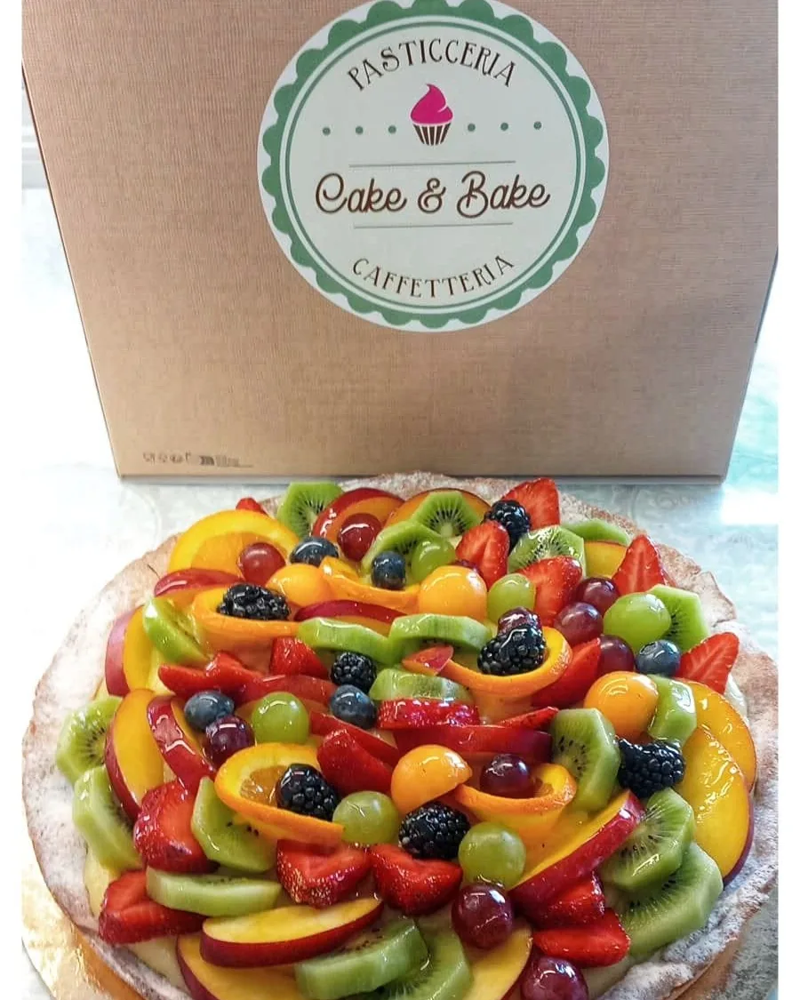
Chiamaci con qualche giorno di anticipo, soprattutto nel fine settimana e sotto le feste. Ti diciamo subito cosa possiamo fare e quando è pronta.
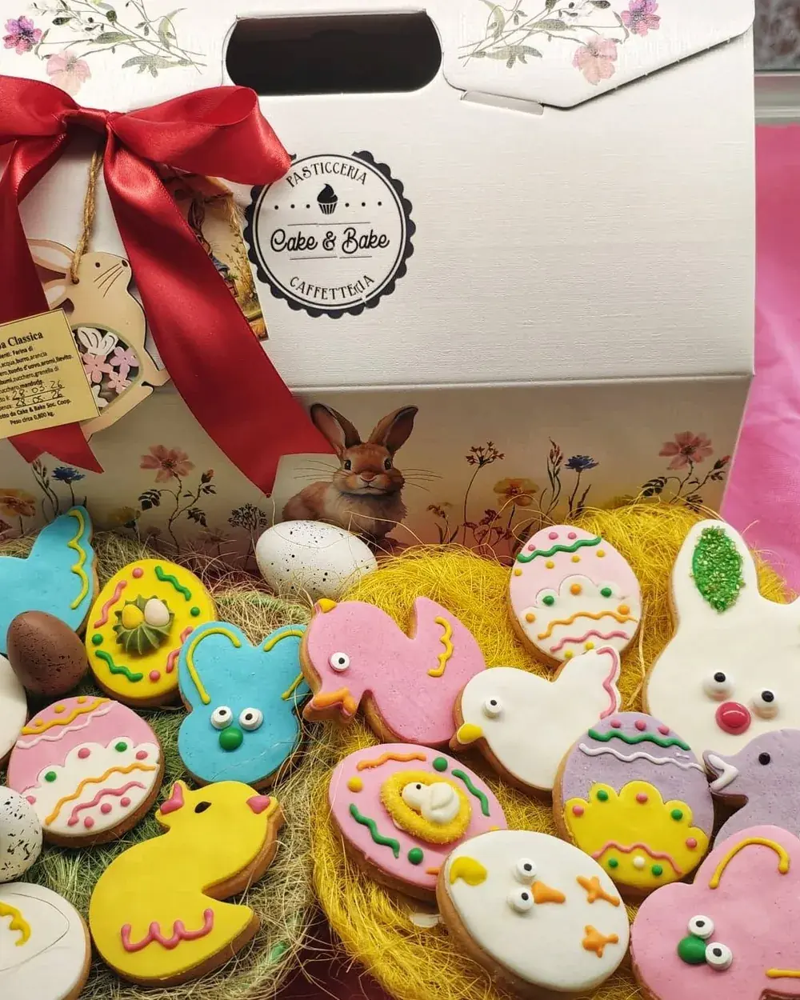
Sotto Natale e sotto Pasqua il laboratorio cambia passo. Escono le colombe e i panettoni, e la vetrina si riempie di biscotti decorati a mano uno per uno: conigli, pulcini, uova con la glassa colorata.
Le confezioni regalo sono pronte in negozio, con il nastro e il biglietto. Per le quantità grandi conviene ordinare in anticipo, perché nelle ultime settimane il laboratorio lavora già a pieno ritmo.
Qualche giornata qualunque, fotografata così com'era.
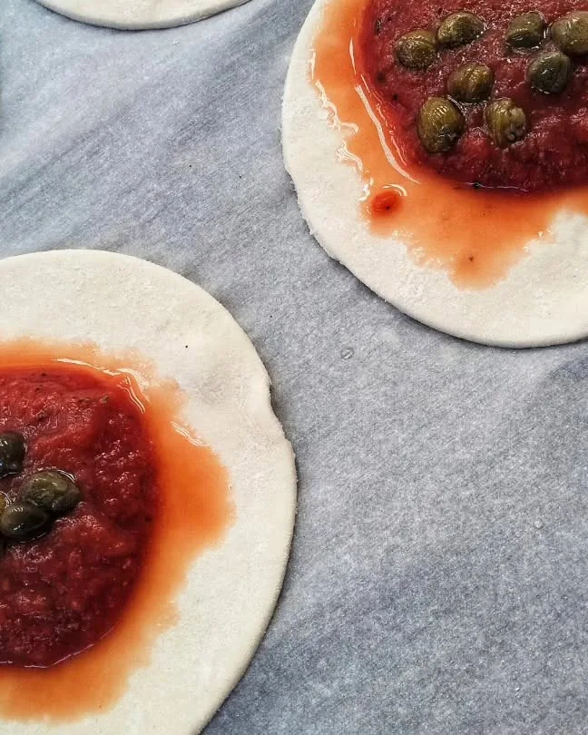
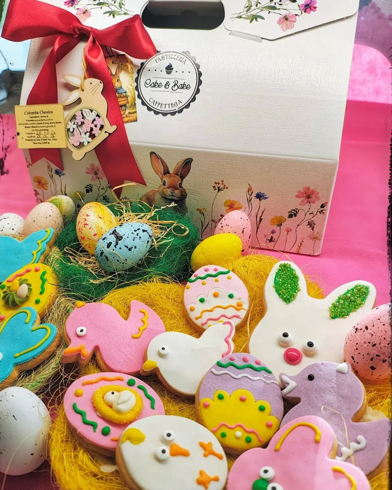
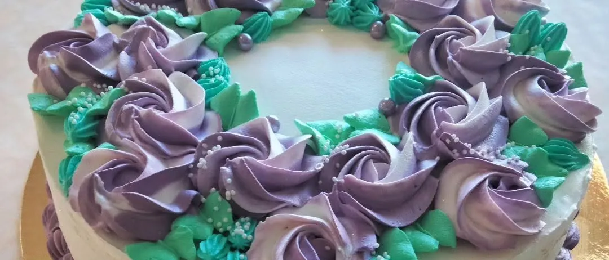
Due negozi a poco più di un chilometro l'uno dall'altro, fra Selargius e Quartucciu.
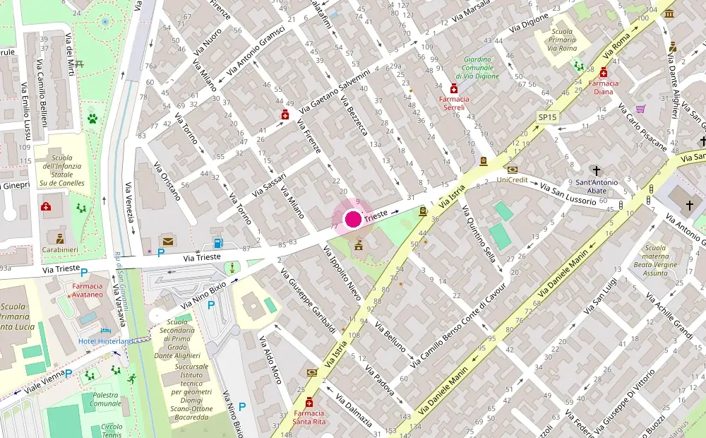
Apri la mappa
Via Trieste 63, angolo Via Firenze
09047 Selargius (CA)
Nei giorni di festa gli orari possono cambiare: una telefonata toglie ogni dubbio.
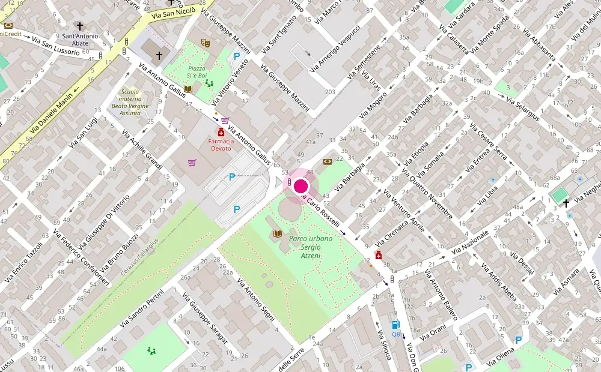
Apri la mappa
Via Carlo Rosselli 51
09044 Quartucciu (CA)
Aperto dalla mattina presto. Per gli orari del giorno conviene una telefonata al negozio.
Mappe: dati OpenStreetMap, licenza ODbL. Si aprono in una pagina esterna.
Per un caffè al banco non serve avvisare. Per una torta, un vassoio di paste o un buffet, basta una telefonata con un po' di anticipo.